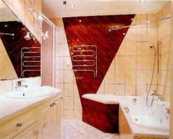
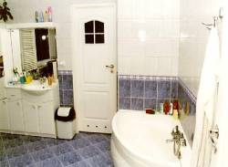
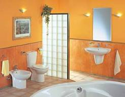

| Bathroom Floors | Tile Types Used In Bathrooms | |
"Tile floors and bathrooms go together like a peanut butter and jelly" - and these are facts. Many bathrooms have tile on every surface like floors, walls, countertops, tubs and shower areas. One of the great joys of tiling a bathroom is the chance to experiment with bold colors and unusual designs. How long does it take? |
Ceramic tiles - Is being considered as the most popular material used by homeowners to tile bathrooms. It's combines strength and durability with timeless good looks. Porcelain tiles - Is a type of ceramic tile but made by the dust pressed method from a composition which results in a tile that is dense, impervious, fine grained and smooth, with a sharply formed face. It is available in mat, unglazed or a high polished finish. Natural Stone tiles - Include granite, marble, travertine, slate, sandstone, and quartzite. Stone Care products are perfect for Home Improvement, kitchen remodeling, and bathroom remodeling projects and are for commercial and residential use. Quarry tile - This tiles are made by extrusion process from natural clay or shale. It is usually available in red and brown dark shades. Find out also more about tile warming systems Looking for more information and tips on tiles? Click here... |
|
Useful Tips When Tiling a Bathroom
|
   If your bathroom is small, mirrors can help you to create a greater sense of space. If there aren't any windows in the room, consider creating a new focal point with a mural of outdoor scenery. Place the mural opposite the mirror for maximum effect. |
|